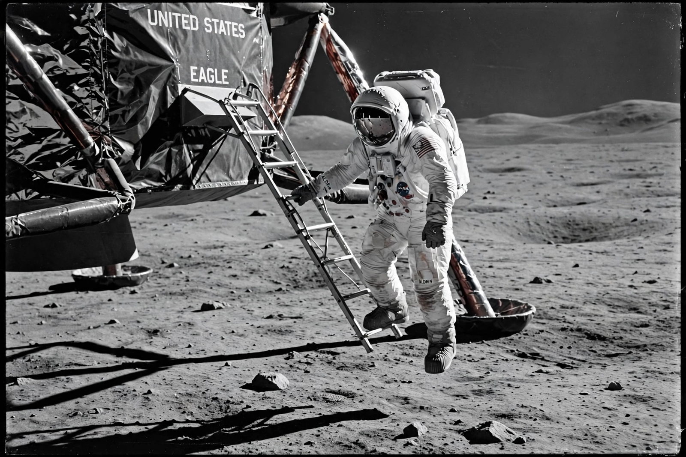

From Wikipedia, the free encyclopedia
| Moon landing | |
|---|---|
| First | Apollo 11, 20 July 1969 |
| First astronauts on surface | Neil Armstrong, Buzz Aldrin |
| Total | Six crewed landings, 1969–1972 |

A Moon landing is the arrival of a spacecraft on the Moon's surface. The first crewed landing was Apollo 11 on 20 July 1969, when Neil Armstrong and Buzz Aldrin landed in the Sea of Tranquility while Michael Collins orbited above; Armstrong's 'one small step' was watched by hundreds of millions.
Five further Apollo landings followed to 1972; twelve men have walked on the Moon. Robotic landings — Soviet Luna, American Surveyor, Chinese Chang'e (including the first far-side landing, 2019), Indian Chandrayaan-3 (2023) — continued the story. NASA's Artemis program aims to return crews in the late 2020s, building on the Space Race and observed by telescopes from Hubble onward.